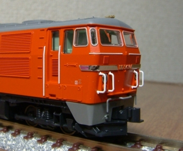
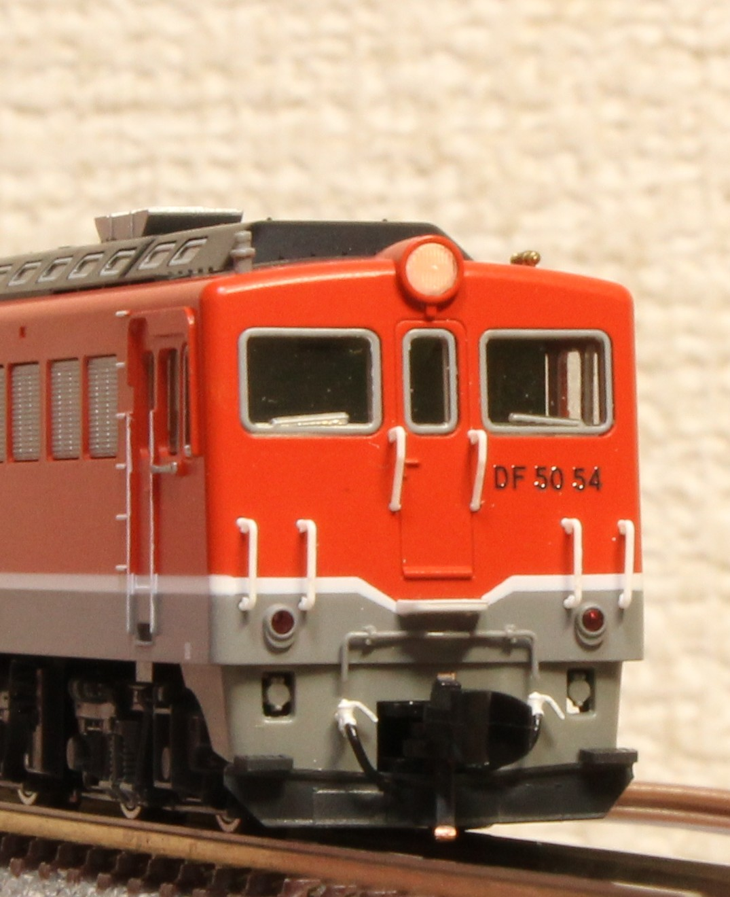
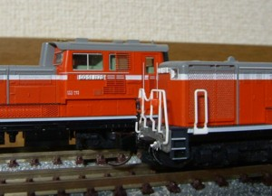
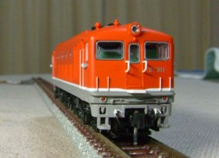
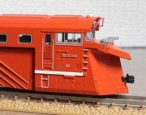

|  |
DD54全部で40両しかいないのですが、3タイプがKATOから発売されています。 |
|  |
DF50ホンモノは非力ですが… |
|  |
DD51エアーホースやプロテクタを取り付けています。 |
|  |
DF91走りはすこぶる良く、スローがとてもよく効きます。 DF50の方は山陰線仕様なので実際には同居していませんが、気にせず 重連運転も楽しんでいます。 |
|  |
DD16マイクロエース製品がしばらくいましたが、KATOからの発売に伴い KATOに置き換わりました。 |